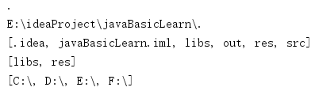
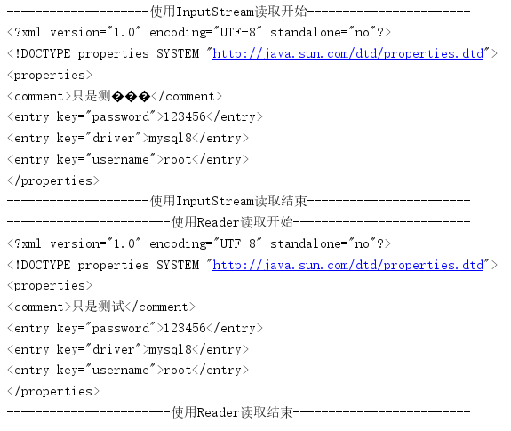
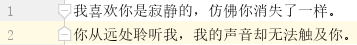

java的IO通过java.io包下的类和接口来支持，在java.io包下主要包括输入、输出两种IO流，每种输出输出流又可以分为 字节流和字符流 两大类。除此之外，Java的IO流还使用了一种装饰器的设计模式，它将IO流分成 底层节点流和上层处理流 ，其中节点流用于和底层物理存储节点直接关联，不同的物理节点获取节点流的方式可能存在一定差异，但程序可以把不同的物理节点包装成统一的处理流，从而允许程序使用统一的输入、输出代码来读取不同的物理存储节点的资源。此外，Java7在java.nio包及其子包下提供了一系列全新的API，对原有的新IO的升级，所以称为 NIO2 。
如果希望程序种操作文件和目录，都可以通过File类来完成， File能新建、删除、重命名文件和目录，File不同访问文件内容本身。 如果需要访问文件内容本身，可以通过输入、输出流来完成。File类主要包括以下的几种操作：
具体的方法可以参考Java的API文档，此处一个简单的实例如下：
@Test
public void test_0() throws IOException {
//以当前路径来创建一个File对象
File file = new File(".");
//输出当前路径的名称，但是由于是相对路径，所以输出的为一个点：.
System.out.println(file.getName());
//输出绝对路径
System.out.println(file.getAbsolutePath());
//打印当前路径下的所有子路径和文件名
System.out.println(Arrays.toString(file.list()));
//打印当前路径下的经过过滤后的文件名和目录
System.out.println(Arrays.toString(file.list(new FilenameFilter() {
@Override
public boolean accept(File dir, String name) {
//以s结尾
return name.endsWith("s");
}
})));
//打印系统的所有根路径
System.out.println(Arrays.toString(File.listRoots()));
//在当前文件夹下创建一个临时文件
File tmp=File.createTempFile("tmp-",".txt",file);
//指定退出JVM时删除文件
tmp.deleteOnExit();
}输出如下：

① 按照流的流向来划分，可以分为如下两种（输入、输出方向根据程序运行所在的内存的角度划分）：
Java的输入流主要由InputStream和Reader作为基类，输出流主要由OutputStream和Writer作为基类。他们都是抽象类，无法直接创建实例。
② 按照流的每次操作的字节数来划分，可以分为如下两种：
字节流主要由InputStream和OutputStream作为基类，而字符流主要由Reader和Writer作为基类。
③ 按照流的角色划分，可以分为如下两种：
Java使用处理流来包装节点流是一种典型的 装饰器设计模式 ，通过使用处理流来包装不同的节点流，可以消除不同的节点流的实现差异，也可以提供更加方便的方法来完成输入、输出功能。
InputStream和Reader是所有输入流的抽象基类，它们的常用实现类分别为FileInputStream和FileReader，它们都是节点流，与指定文件直接相关联。一个实例如下：
@Test
public void test_1() throws IOException {
//利用try来实现自动管理IO资源
try(
FileInputStream in = new FileInputStream("res/xml/test.xml");
FileReader fileReader = new FileReader("res/xml/test.xml");
){
byte[] buffer = new byte[10];
char[] charBuffer=new char[10];
int index=-1;
String res0="";
String res1="";
System.out.println("--------------------使用InputStream读取开始-----------------------");
while ((index=in.read(buffer))!=-1){
res0+=new String(buffer,0,index);
}
//buffer数组的大小比较小，不能一次读完整个文件
//当reade()方法不同读完一个中文字符（utf-8下，1中文字符=3字节）时，将导致乱码
System.out.println(res0);
System.out.println("--------------------使用InputStream读取结束-----------------------");
System.out.println("-----------------------使用Reader读取开始-------------------------");
while ((index=fileReader.read(charBuffer))!=-1){
res1+=new String(charBuffer,0,index);
}
System.out.println(res1);
System.out.println("-----------------------使用Reader读取结束-------------------------");
}
}输出结果如下：

OutputStream和Writer是所有输出流的基类，它们的常用实现类分别为FileOutputStream和FileWriter，它们也是节点流。此外由于字符流以字符为操作单位，所以Writer可以用字符串来代替字符数组，即以String对象作为参数，一个实例如下：
@Test
public void test_2(){
try(
FileOutputStream out = new FileOutputStream("test.md");
FileWriter out1=new FileWriter("test1.md");
){
//往字节输出流输出内容
out.write("测试".getBytes());
//往字符输出流输出内容,可以直接用String对象作为参数
out1.write("**我喜欢你是寂静的，仿佛你消失了一样。**\t\t\n");
out1.write("**你从远处聆听我，我的声音却无法触及你。**\t\t\n");
} catch (IOException e) {
e.printStackTrace();
}
}我们将会看到程序会生成test.md和test0.md两个文件，里面都分别写了相应的内容。
只要构造器的参数 不是一个物理节点，而是一个已经存在的流 ，那么这种流就一定是处理流。所有的节点流都是直接以物理IO节点作为构造器参数的。下面是一个使用PrintStream处理流的一个案例，如下：
@Test
public void test_3(){
try(
FileOutputStream out=new FileOutputStream("test1.md")
){
PrintStream printStream = new PrintStream(out);
printStream.println("我喜欢你是寂静的，仿佛你消失了一样。");
printStream.println("你从远处聆听我，我的声音却无法触及你。");
}catch (IOException e) {
e.printStackTrace();
}
}输出的test1.md的文件内容如下：

输入/输出流体系提供了两个 转换流 ，这两个转换流用于实现将字节流转换成字符流，其中InputStreamReader将字节输入流转换成字符输入流，OutputStreamWriter将字节输出流转换成字符输出流。一个例子如下：
@Test
public void test_4(){
try(
FileInputStream in=new FileInputStream("test1.md");
//将字节流转换成字符流
InputStreamReader inChar=new InputStreamReader(in);
//在利用处理流包装一些
BufferedReader reader=new BufferedReader(inChar);
){
//利用处理流来读取数据
String buffer=null;
while((buffer=reader.readLine())!=null){
System.out.println(buffer);
}
} catch (IOException e) {
e.printStackTrace();
}
}Java的标准输入/输出分别通过System.in和System.out来代表，在默认情况下它们分别代表键盘和屏幕。在System类里提供了三个重定向标准输入/输出的方法。如下：
一个综合的例子如下：
@Test
public void test_5(){
try(
PrintStream printStream=new PrintStream(new FileOutputStream("test.md"));
FileInputStream in=new FileInputStream("test.md");
){
//设置标准输出为printStream
System.setOut(printStream);
System.out.println("我喜欢你是寂静的，仿佛你消失了一样。");
System.out.println("你从远处聆听我，我的声音却无法触及你。");
} catch (IOException e) {
e.printStackTrace();
}
}
@Test
public void test_6(){
try(
FileInputStream in=new FileInputStream("test.md");
){
//设置标准输入流为in
System.setIn(in);
Scanner scanner = new Scanner(System.in);
while (scanner.hasNext()){
System.out.println(scanner.next());
}
} catch (IOException e) {
e.printStackTrace();
}
}